First of all let´s download my Create hyperlinks - index to names script and Sample-1.indd document that we will use for testing. This is the most complex script I made for this task.
Open the document, go to the Index section — page Index-1.
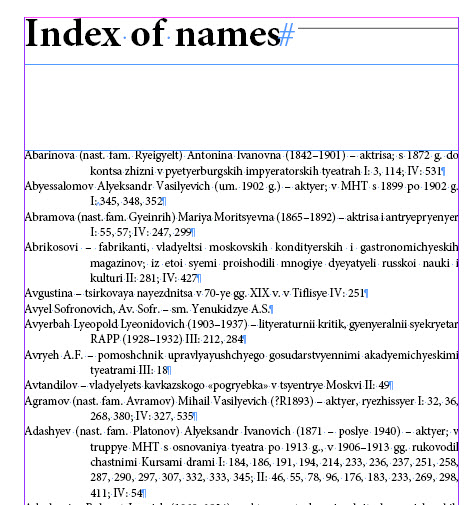
The first word in a paragraph is the last name of a person mentioned in the book followed by his/her first name, patronymic, initials and brief information. After this follow page numbers where the person is mentioned. The page numbers are grouped into four sections marked with roman numbers: I, II, III and IV. Originally these were four separate printed books (volumes). Now they are combined into a single document in InDesign so that to be exported to ePub. If all the links are within a single file, they work without problems after exporting.
Now select some text in the index – a page or two – and run the script. At the beginning a progress bar appears: the script gathers the information from the selected text about the hyperlinks to be created.
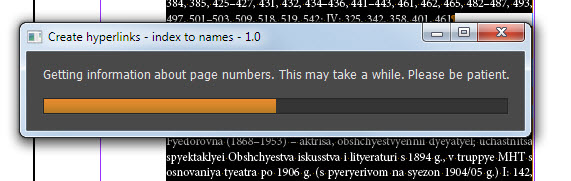
Then a dialog box appears which tells you how many hyperlinks already exist in the document and how many are going to be created.
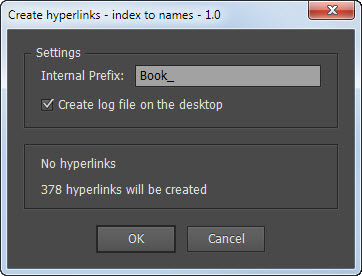
Here you can type in a prefix that will be added to the name of a hyperlink (which is a consecutive number). You can also turn on logging feature so that a text file will be created on the desktop into which every step will be logged.
After clicking OK, another progress bar appears. Now it gives you information about the current hyperlink being created: its number, person´s name, page, speed of creation and estimated time for completing the script.
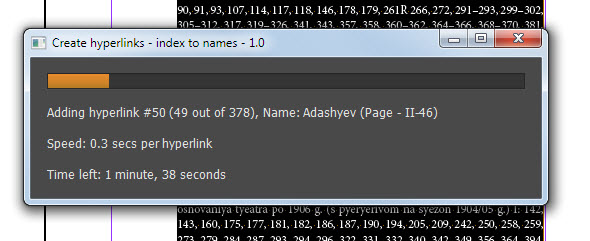
At the end the script the final report pops up.
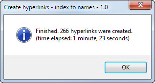
In the hyperlinks panel you can see newly created hyperlinks.
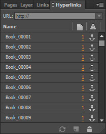
And in the selected text page numbers were marked with colors. Each color has a special meaning: for example, green means that the hyperlink was successfully created, red that the name wasn´t found on the page, blue that the name has duplicates on the page (was found more than once), purple that the page is missing.
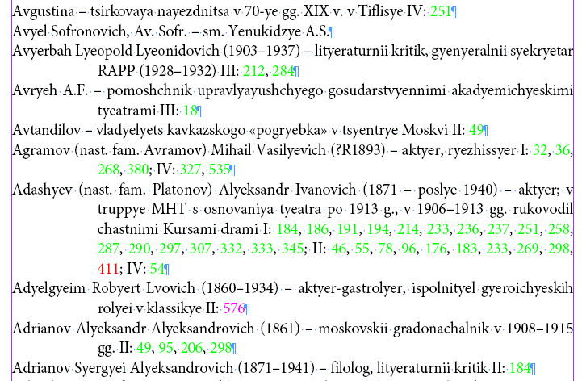
If we go to the destination of a link, we will see that the found text is marked with a color as well. For instance, on the screen capture below the word Andreeva is in blue because it appears more than once on the page. The script creates the link to the first instance and gives us a visual aid so that we could move (in story editor) the anchor to the second instance if necessary.
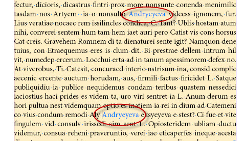
The script adds these temporary colors automatically to the document. When the work is done, you can simply delete the swatches replacing them with black.
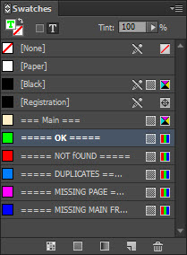
Now double click the log file on the desktop — Create hyperlinks – index to names - 1.0.txt — it provides info about each step taken by the script: if a hyperlink wasn´t created or a problem occured, it explains why.
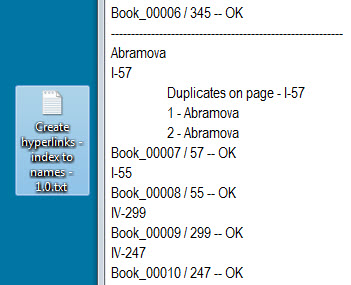
The script is developed in such a way so it could work on a large file. At the beginning creating a hyperlink takes about 0.1 second, but if the document already contains, say, 20,000+ hyperlinks, it may take about 1,5—2 minutes to make only one hyperlink (no difference whether you create it by script or manually in InDesign). You can select some text and process it bit by bit; or you can select a text frame or place the cursor into text and process the whole story (you may start the script on Friday night so that it would work during weekend and come back to work on Monday morning to see the work completed).
The script can be rerun many times over the same text. The page numbers marked with a color won´t be process again. Let´s illustrate this with example: the script processed the paragraph leaving page 290 black because of a typo – letter “O” instead of zero.
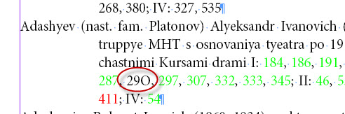
You can correct the typo, select the paragraph and run the script again: only black page numbers will be processed.
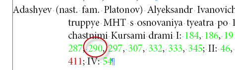
Before running the script that makes hyperlinks, I do some preparatory work. First I run Label main text frames scripts to indicate the main text flow. A page in most cases contains many text frames. To make things easier, the script sets label “main” to each frame in the chain. It also creates and applies object style called “main” which applies a yellowy tint to the frames. It´s done only to visualize the labeled frames so I could easily see where I didn´t apply the labels. The style can be safely deleted at any moment, or its fill color can be set to [Paper]/[None]/White.
Then I usually run Expand main text frames to the bottom of page script which sets a page break at the end of each “main” frame and expands it to the bottom of page. I have to do this at times because adding an invisible anchor (hyperlink destination) sometimes makes the text to reflow and the text from the current page goes to the next one. Later, after creating hyperlinks, I can restore the frames back to their original position with Unexpand main text frames at the bottom of page script and replace page breaks with paragraph returns.